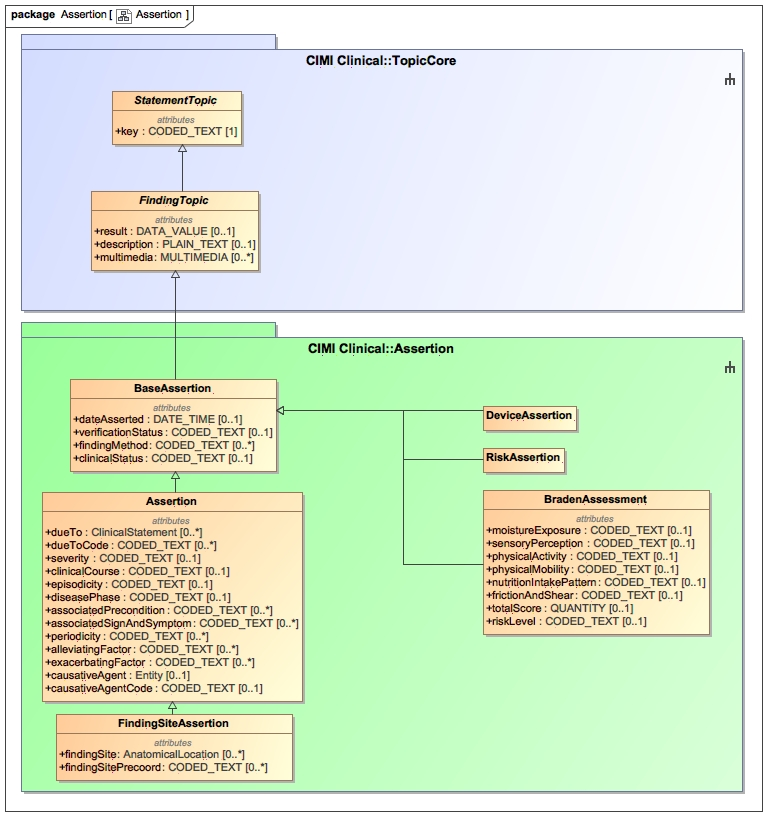
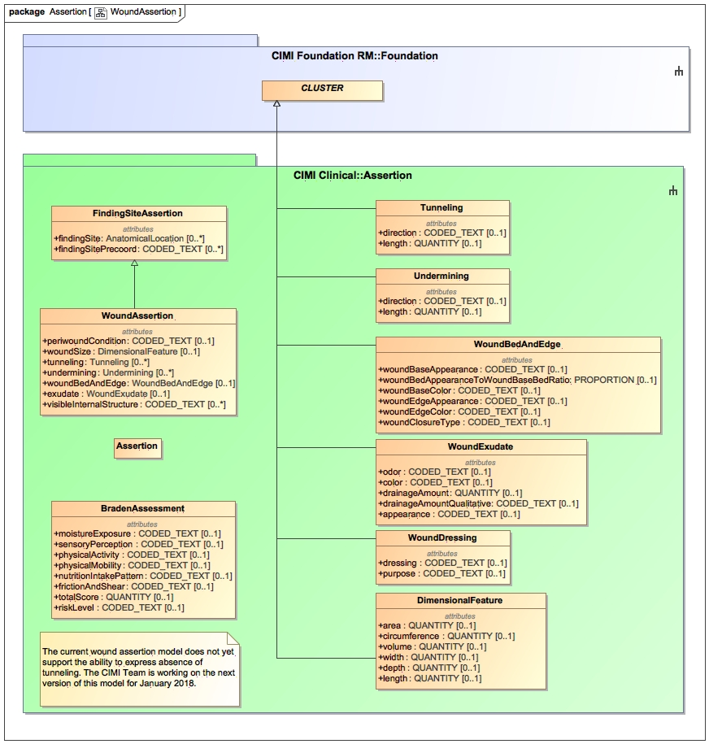

The CIMI Assertion pattern is used for assertions made about an individual's state. Typically, assertions are used to assert that the patient is a member of a 'cohort' of patient sharing a common characteristic such as asserting that a patient has diabetes or brown hair color. In an assertion, the key specifies that the statement's topic is an assertion-style statement while the name contains the concept or post-coordinated expression being asserted. Assertions do not imply necessarily that clinical judgement was used to derive the assertion though this is often the case (e.g., a formal diagnosis after a review of the evidence. Rather, the Assertion pattern is merely a structural pattern for finding statements that are not in the form of a question-answer pair (e.g., Systolic Blood Pressure = 120 mmHg). For the latter pattern, consider using the EvaluationResult pattern.
 